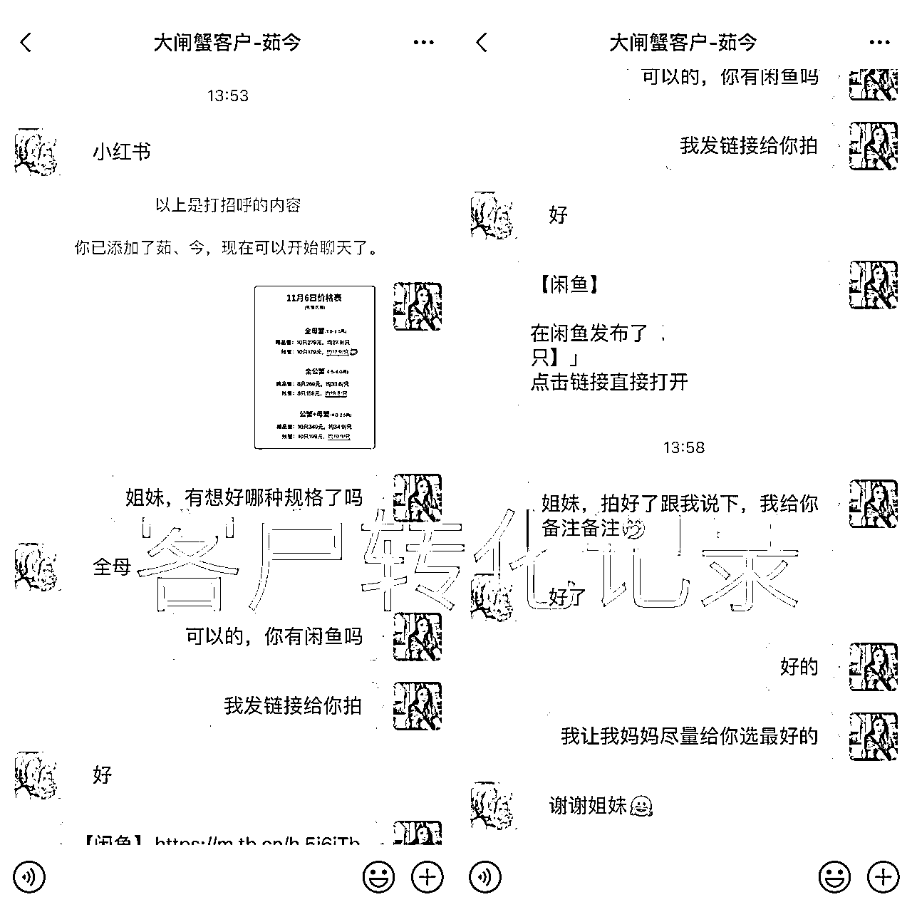

来源：https://nivut760ftk.feishu.cn/docx/CnYKd2b6PokL4vxlt2tcyy42nqd
就标题所提问的：爆款，就一定很牛吗？
可能你会觉得：那当然啦，你抽什么风了，难道有爆款不好吗？
但在这里，我对爆款有不一样的理解，对我来说，爆款不一定是件好事
为什么？
我给你们看一个最近很多人模仿的案例
可能你们在小红书上也刷到过这类型的笔记，对吧，都在说“一人说一个暴利的行业”
虽然他们的笔记篇篇都是爆款，但是他们的这篇笔记能给他们带来什么？能带来订单么？
我点进他们的主页去看，他们发的这种笔记，给他们主业带来不了任何的价值
再给你举个我最近在实操项目的案例来对比
你看看像我的这篇笔记，流量非常少对不对？基本上都没有什么点赞的
你信吗，这些笔记每天却能给我带来至少有300块钱的纯收入
啊？为什么？
那你再回过头看看第一个案例，跟我的这个案例对比，发现他们之间有什么区别了吗？
对的，哪怕你发的笔记流量再多，不能给你带来变现的，真的一点价值都没有，都还不如我这种没什么流量的赚得多
不信？我随便放张图给你们过目

你发现了吗？我的笔记基本上都没什么人点赞的，但我的账号笔记随便发发都能成交几单，每天赚个几百块都比那种爆款笔记来得轻松
为什么那些爆款笔记没价值呢？
因为他们这些人都是来看热闹的，都是来娱乐的，按照我们这种创业者来说，他们就是娱乐粉，不值钱
光有流量有什么用，难转化，难成交，难变现，你想赚他们的钱，呵呵，想太多了
为什么会这样呢？
因为你本身的这个笔记的类型，他是跟商业没有任何关系的，他们一开始来看你的笔记，都是抱着娱乐的心态来看的
不像我的笔记，虽然说它的浏览量不是很高，点赞不是很多，但是我的这条笔记吸引的都是购物粉，他们来看我的笔记，是带着钱包来看的，而不是带着娱乐的心态来看的
这点很重要哦，不要觉得这是一码事，其实这是两码事！
比如你晚上吃完饭无目的去逛街，跟你带着目的去逛街，这是两种心态，消费的金额肯定是不一样的
这就很容易理解了，为什么他们有爆款笔记在，都没我赚得多，这就是原因所在了
所以不要一味的去追求所谓的爆款爆款，认为流量多就一定是件好事！
如果说你只是为了涨粉，为了让数据好看点，那么你这么去做是没问题的
但如果你想要通过它去赚钱，那这种爆款是一点意义都没有的，而且还浪费你的时间，何必呢
现在我无论在小红书上做什么类型的副业项目，我的目的性是非常强的，都是奔着赚钱去做的
要是我做的这个项目，它不能给我带来任何一分钱，我就直接放弃换下一个了
或者说我这篇笔记，要是不能给我引来客户成交的，我就直接注销掉帐号，再换下一个了
就是这么的现实化，就是这么的利益化
所以我劝你们不要去追求所谓的爆款，带来不了任何价值的，再多流量都跟你没关系
平时我有空的时候，都会去刷刷小红书，看到有些博主粉丝都好几万了，变现能力却不如一个上百粉丝账号的博主
真不夸张，你们有空去刷刷，你就知道我是不是在吹牛了
这是为什么？你们有思考过吗？
要是不明白，再给你们举个我自身的案例吧
我在两年前做快手平台的时候，创建了一个帐号叫做“菜花不想笑”的个人IP
当时有好几条视频都直接飙到了上百万的播放量，累计总播放量破亿了，可能你们现在去搜索那个帐号应该还能看得到
当时我觉得既然播放量都这么高了，要不我就开始去直播带带货吧，趁热度还在可以赚点钱，看看能不能成
开直播当天晚上我心里面想，有这么大的流量加持下，卖个9.9元的产品至少也能出个上千单吧，直播一场只要能给我赚到上千块我也知足了
带着这种兴奋感，我直播过程很卖力，在线人数高峰可飙到上千人，播到整个人衣服背后都是汗，下播结束后以为会有惊喜，但数据却给我了一个大巴掌
直播在线有上千人，当天晚上连一单9.9元的螺蛳粉都卖出不去，卧槽！9块9啊！又不是什么几千块的产品
当时我就直接怀疑了这个平台给我推送的是什么流量，马上带着气愤和疑问去查看后台的直播粉丝人群画像和帐号的人群画像
有一个数据让我当场就惊呆了！背后的人群全都是18岁以下的！全是初中生！而且比例居然到了90%以上！！！
我的天哪，当时我整个人背后都发凉了，我辛辛苦苦做了这么多的爆款视频，每条视频都是精心策划和创作出来的，可能创作一条视频我都要花好几天的时间去完成
最后连一单9块9的螺蛳粉都卖不出去，你们想想当时我是什么样的心情
自从那次之后，我再也就没有更新过那个帐号的视频了，也因为这个项目的结束，让我觉悟到了，流量再多真一点用都没有，最后赚不到钱，你甚至连更新下去的动力都没有
我们做生意的，做网络创业的，一定要利益在先，一定要价值在先
而不是为爱发电的去做一件事，我想问你，你能为爱发电坚持得了几年？
我们一定要想清楚，你的这个流量能给你带来什么价值，没有价值的就不要再去做！
不要去追求所谓的爆款！一定要追求有价值的爆款
没有价值的流量，它就是个垃圾流量
好了，今天的分享就到这里了，你要是在小红书上有哪里不懂的，可以后台聊聊
我叫艾小飞，我们下期再见
原创：艾小飞
转载可私信
禁止搬运和抄袭
微信：aifei9977（记得备注来意）